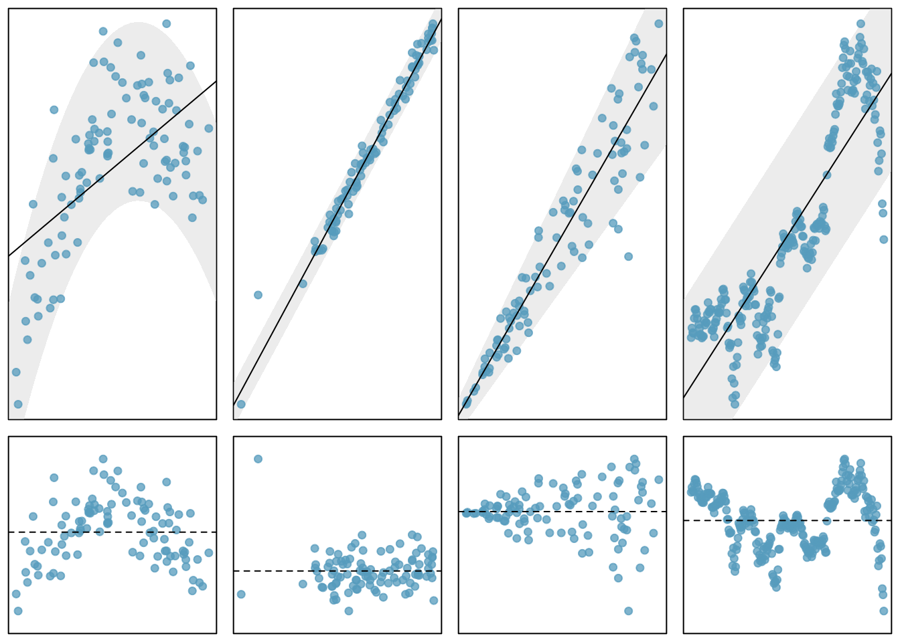
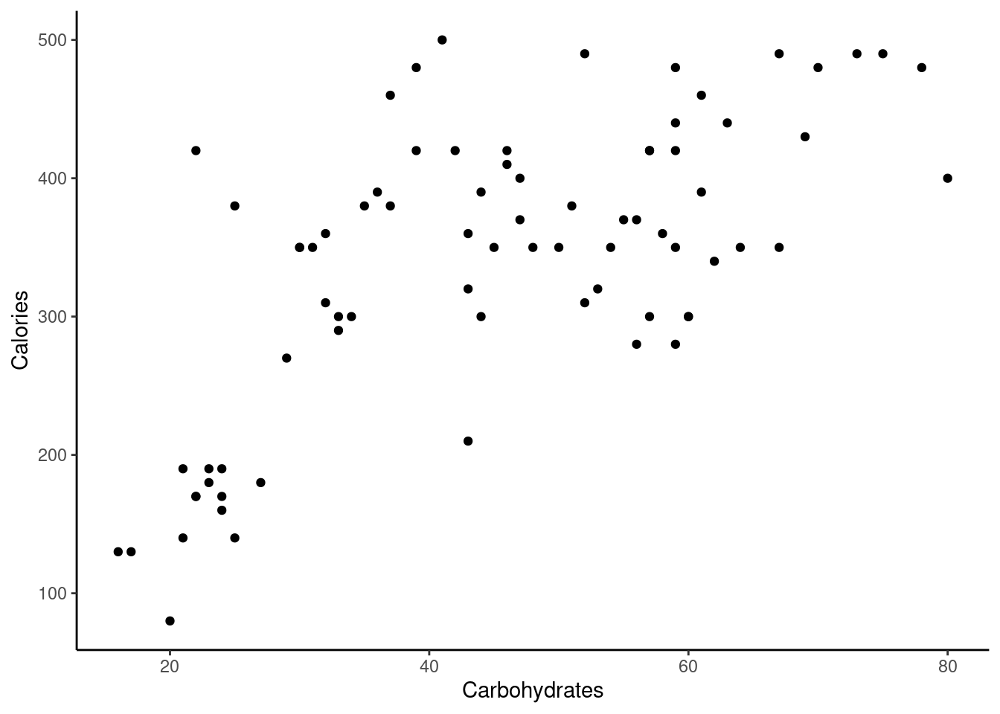
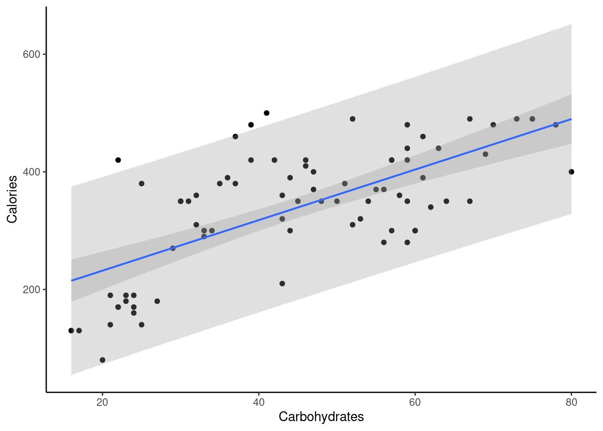

28 Linear Regression Inference
28.1 Objectives
Given a simple linear regression model, conduct inference on the coefficients \(\beta_0\) and \(\beta_1\).
Given a simple linear regression model, calculate the predicted response for a given value of the predictor.
Build and interpret confidence and prediction intervals for values of the response variable.
28.2 Introduction
In this chapter we discuss uncertainty in the estimates of the slope and y-intercept for a regression line. This will allow us to perform inference and predictions. Just as we identified standard errors for point estimates in previous chapters, we first discuss standard errors for these new estimates. This chapter is a classical chapter in the sense that we will be using the normal distribution. We will assume that the errors are normally distributed with constant variance. Later in the book, we will relax these assumptions.
28.2.1 Regression
Last chapter, we introduced linear models using the simple linear regression model:
\[ Y=\beta_0+\beta_1X+e \]
where now we assume the error term follows a normal distribution with mean 0 and constant standard deviation \(\sigma\). Using the method of least squares, which does not require the assumption of normality, we obtain estimates of \(\beta_0\) and \(\beta_1\):
\[ \hat{\beta}_1 = {\sum x_i y_i - n\bar{x}\bar{y} \over \sum x_i^2 -n\bar{x}^2} \]
\[ \hat{\beta}_0=\bar{y}-\hat{\beta}_1\bar{x} \]
If we assume a probability distribution for the errors, we could also find point estimates using maximum likelihood methods. This will not be discussed in this book.
Using these estimates, for a given value of the predictor, \(x_*\), we can obtain a prediction of the response variable. Here we are using the subscript \(_*\) to denote a new value for the explanatory variable. The resulting prediction, which we will denote \(\hat{Y}_*\), is the average or expected value of the response given predictor value \(x_*\):
\[ \hat{Y}_*=\hat{\beta}_0+\hat{\beta}_1x_* \]
The reason this model returns the expected value of the response at the given value of the predictor is because the error term has an expected value of zero. As a review of the properties of expectation as well as last chapter, we have:
\[ E(Y|X=x)=E(\beta_0+\beta_1x+e)=Y=\beta_0+\beta_1x+E(e)=\beta_0+\beta_1x \]
because \(\beta_0\), \(\beta_1\), and \(x\) are constants.
It should be abundantly clear by now that \(\hat{Y}_*\), \(\hat{\beta}_0\), and \(\hat{\beta}_1\) are estimators. Being estimators, they are dependent on our random sample, our data. If we collect a new random sample from the same population, we will get new estimates from these estimators. Thus, we can think of \(\hat{Y}_*\), \(\hat{\beta}_0\), and \(\hat{\beta}_1\) as random variables. Like all random variables, they have distributions. We can use the distribution of an estimator to build confidence intervals and conduct hypothesis tests about the true values of the parameter it is intended to estimate. The estimators based on least squares are unbiased, their distributions are centered around the actual values of \(Y\), \(\beta_0\) and \(\beta_1\), respectively.
28.2.2 Review of assumptions
We will review the assumptions of the least squares model because they are important for inference. Refer to Figure @ref(fig:assump271-fig), which plots the linear regression in the top row and the residuals in the second row. We generally assume the following:
- Fit. The data should show a linear trend. If there is a nonlinear trend, a transformation of the explanatory variable or a more advanced regression method should be applied. When looking at the residual plot, if the trend is linear, we should see a spread of points that are flat. The left column of Figure @ref(fig:assump271-fig) is an example of a nonlinear relationship. The top plot is the regression plot and we can see what looks like a quadratic relationship instead of a linear one. The residual plot, the plot in the lower left corner of Figure @ref(fig:assump271-fig), also exhibits this non-linear trend.
- Nearly normal residuals. Generally the residuals must be nearly normal to use a \(t\) or \(F\) for inference. When this assumption is found to be unreasonable, it is usually because of outliers or concerns about influential points. An example of non-normal residuals is shown in the second column of Figure @ref(fig:assump271-fig). A qq plot is also useful as a diagnostic tool as we have seen. We can still use the bootstrap as an inference tool if the normality assumption is unreasonable.
- Constant variability. The variability of points around the least squares line remains roughly constant. An example of non-constant variability is shown in the third panel of Figure @ref(fig:assump271-fig). The constant variability assumption is needed for the \(t\) and \(F\) distributions. It is not required for the bootstrap method.
- Independent observations. Be cautious about applying regression to data collected sequentially in what is called a time series. Such data may have an underlying structure that should be considered in a model and analysis. An example of a time series where independence is violated is shown in the fourth panel of Figure @ref(fig:assump271-fig). More advanced methods are required for time series data even including using a bootstrap.
In a later chapter we will explore more regression diagnostics.
28.2.3 Distribution of our estimators
With the assumption that the error term is normally distributed, we can find the distributions of our estimates, which turn out to be normal:
\[ \hat{\beta}_0\sim N\left(\beta_0, \sigma\sqrt{{1\over n}+{\bar{x}^2\over \sum (x_i-\bar{x})^2}}\right) \]
\[ \hat{\beta}_1\sim N\left(\beta_1, {\sigma \over \sqrt{ \sum (x_i-\bar{x})^2}}\right) \]
\[ \hat{Y}_* \sim N\left(\beta_0+\beta_1x_*, \sigma\sqrt{{1\over n}+{(x_*-\bar{x})^2\over \sum (x_i-\bar{x})^2}}\right) \]
Notice that all three of these are unbiased, the expected value is equal to the parameter being estimated. Looking at the variance of the slope estimate we can see that is a function of the underlying unexplained variance, \(\sigma^2\) and the data. The denominator is increased by having a larger spread in the explanatory variable. The slope of the estimated line is more stable, less variable, if the independent variable has high variance. That is interesting. If you are designing an experiment, this gives you insight in how to select the range of values for your explanatory variable.
28.3 Inference
Now that we know how the coefficient estimates and the average predicted values behave, we can perform inference on their true values. Let’s take \(\hat{\beta}_1\) for demonstration:
\[ \hat{\beta}_1\sim N\left(\beta_1, {\sigma \over \sqrt{ \sum (x_i-\bar{x})^2}}\right) \]
Thus,
\[ {\hat{\beta}_1-\beta_1 \over {\sigma \over \sqrt{ \sum (x_i-\bar{x})^2}}}\sim N\left(0, 1\right) \]
However, note that the expression on the left depends on error standard deviation, \(\sigma\). In reality, we will not know this value and will have to estimate it with
\[ \hat{\sigma}=\sqrt{{1\over n-2} \sum_{i=1}^n \hat{e}_i^2} \]
where \(\hat{e}_i\) is the observed \(i\)th residual (\(\hat{e}_i=y_i-\hat{\beta}_0-\hat{\beta}_1x_i\)).
As we learned in the last block, if we replace population standard deviation (\(\sigma\)) with an estimation, the resulting random variable no longer has the standard normal distribution. In fact, it can be shown that
\[ {\hat{\beta}_1-\beta_1 \over {\hat \sigma \over \sqrt{ \sum (x_i-\bar{x})^2}}}\sim \textsf{t}\left(n-2\right) \]
We only have \(n-2\) degrees of freedom because in the estimation of \(\sigma^2\) we had to estimate two parameters, \(\beta_0\) and \(\beta_1\).
We can use this information to build a \((1-\alpha)*100\%\) confidence interval for \(\beta_1\). First, we recognize that
\[ \mbox{P}\left(-t_{\alpha/2,n-2} \leq {\hat{\beta}_1-\beta_1 \over {\hat \sigma \over \sqrt{ \sum (x_i-\bar{x})^2}}}\leq t_{\alpha/2,n-2} \right) = 1-\alpha \]
Solving the expression inside the probability statement for \(\beta_1\) yields a confidence interval of
\[ \beta_1 \in \left(\hat{\beta_1} \pm t_{\alpha/2,n-2}{\hat \sigma \over \sqrt{\sum(x_i-\bar{x})^2}}\right) \]
We can also evaluate the null hypothesis \(H_0: \beta_1 =\beta^*_1\). If the true value of \(\beta_1\) were \(\beta^*_1\), then the estimated \(\hat{\beta_1}\) should be around that value. In fact, if \(H_0\) were true, the value
\[ {\hat{\beta}_1-\beta^*_1 \over {\hat \sigma \over \sqrt{ \sum (x_i-\bar{x})^2}}} \]
has the \(\textsf{t}\) distribution with \(n-2\) degrees of freedom. Thus, once we collect a sample and obtain the observed \(\hat{\beta_1}\) and \(\hat \sigma\), we can calculate this quantity and determine whether it is far enough from zero to reject \(H_0\).
Similarly, we can use the distribution of \(\hat \beta_0\) to build a confidence interval or conduct a hypothesis test on \(\beta_0\), but we usually don’t. This has to do with the interpretation of \(\beta_0\).
28.3.1 Starbucks
That was a great deal of mathematics and theory. Let’s put it to use on the example from Starbucks. In the file data/starbucks.csv we have nutritional facts for several Starbucks’ food items. We used this data in the homework for last chapter. We will use this data again to illustrate the ideas we have introduced in this section.
Read in the data.
starbucks <- read_csv("data/starbucks.csv") %>%
mutate(type=factor(type))Exercise:
Summarize and explore the data.
Let’s look at a summary of the data.
glimpse(starbucks)Rows: 77
Columns: 7
$ item <chr> "8-Grain Roll", "Apple Bran Muffin", "Apple Fritter", "Banana…
$ calories <dbl> 350, 350, 420, 490, 130, 370, 460, 370, 310, 420, 380, 320, 3…
$ fat <dbl> 8, 9, 20, 19, 6, 14, 22, 14, 18, 25, 17, 12, 17, 21, 5, 18, 1…
$ carb <dbl> 67, 64, 59, 75, 17, 47, 61, 55, 32, 39, 51, 53, 34, 57, 52, 7…
$ fiber <dbl> 5, 7, 0, 4, 0, 5, 2, 0, 0, 0, 2, 3, 2, 2, 3, 3, 2, 3, 0, 2, 0…
$ protein <dbl> 10, 6, 5, 7, 0, 6, 7, 6, 5, 7, 4, 6, 5, 5, 12, 7, 8, 6, 0, 10…
$ type <fct> bakery, bakery, bakery, bakery, bakery, bakery, bakery, baker…inspect(starbucks)
categorical variables:
name class levels n missing
1 item character 77 77 0
2 type factor 7 77 0
distribution
1 8-Grain Roll (1.3%) ...
2 bakery (53.2%), petite (11.7%) ...
quantitative variables:
name class min Q1 median Q3 max mean sd n missing
1 calories numeric 80 300 350 420 500 338.831169 105.368701 77 0
2 fat numeric 0 9 13 18 28 13.766234 7.095488 77 0
3 carb numeric 16 31 45 59 80 44.870130 16.551634 77 0
4 fiber numeric 0 0 2 4 7 2.220779 2.112764 77 0
5 protein numeric 0 5 7 15 34 9.480519 8.079556 77 0Let’s predict calories from the carbohydrate content.
Exercise:
Create a scatterplot of calories and carbohydrate, carbs, content.
Figure @ref(fig:scat271-fig) is the scatterplot.
starbucks %>%
gf_point(calories~carb) %>%
gf_labs(x="Carbohydrates",y="Calories") %>%
gf_theme(theme_classic())
Exercise:
UseRto fit a linear regression model by regressingcaloriesoncarb.
The results of fitting a linear least squares model is stored in the star_mod object.
star_mod <- lm(formula = calories ~ carb, data = starbucks)summary(star_mod)
Call:
lm(formula = calories ~ carb, data = starbucks)
Residuals:
Min 1Q Median 3Q Max
-151.962 -70.556 -0.636 54.908 179.444
Coefficients:
Estimate Std. Error t value Pr(>|t|)
(Intercept) 146.0204 25.9186 5.634 2.93e-07 ***
carb 4.2971 0.5424 7.923 1.67e-11 ***
---
Signif. codes: 0 '***' 0.001 '**' 0.01 '*' 0.05 '.' 0.1 ' ' 1
Residual standard error: 78.26 on 75 degrees of freedom
Multiple R-squared: 0.4556, Adjusted R-squared: 0.4484
F-statistic: 62.77 on 1 and 75 DF, p-value: 1.673e-1128.3.1.1 Hypothesis test
In the second row of the Coefficients portion of the table we have our point estimate, standard error, test statistic, and \(p\)-value for the slope.
The hypotheses for this output is
\(H_0\): \(\beta_1 = 0\). The true linear model has slope zero. The carb content has no impact on the the calorie content.
\(H_A\): \(\beta_1 \neq 0\). The true linear model has a slope different than zero. The higher the carb content, the greater the average calorie content or vice-versa.
Our estimate of the slope is 4.297 with a standard error of 0.5424. Just for demonstration purposes, we will use R to calculate the test statistic and \(p\)-value as a series of steps. The test statistic under the null hypothesis is:
\[ {\hat{\beta}_1-0 \over {\hat \sigma \over \sqrt{ \sum (x_i-\bar{x})^2}}} \]
The denominator is the standard error of the estimate. The estimate of the residual standard deviation is reported in the last line as 78.26. But it is just the square root of the sum of squared residuals divided by the degrees of freedom.
sighat<-sqrt(sum((star_mod$residuals)^2)/75)
sighat[1] 78.25956The standard error of the slope estimate is, and confirmed in the table:
std_er<-sighat/sqrt(sum((starbucks$carb-mean(starbucks$carb))^2))
std_er[1] 0.5423626The test statistic is
(4.2971-0)/std_er[1] 7.922928And the \(p\)-value
2*pt((4.2971-0)/std_er,73,lower.tail = FALSE)[1] 1.965319e-11This is slightly different from the table value because of the precision of the computer and the small \(p\)-value.
We reject \(H_0\) in favor of \(H_A\) because the data provide strong evidence that the true slope parameter is greater than zero.
The computer software uses zero in the null hypothesis, if you wanted to test another value of the slope then you would have to do the calculations step by step like we did above.
By the way, this was not a tidy way to do the calculation. The broom package makes it easier to use tidy ideas on the regression model. We used these ideas in the last chapter.
As a reminder:
library(broom)tidy(star_mod) # A tibble: 2 × 5
term estimate std.error statistic p.value
<chr> <dbl> <dbl> <dbl> <dbl>
1 (Intercept) 146. 25.9 5.63 2.93e- 7
2 carb 4.30 0.542 7.92 1.67e-11And step by step:
tidy(star_mod) %>%
filter(term=="carb") %>%
summarize(test_stat=(estimate-0)/std.error,p_value=2*pt(test_stat,df=73,lower.tail = FALSE))# A tibble: 1 × 2
test_stat p_value
<dbl> <dbl>
1 7.92 1.97e-1128.3.1.2 Confidence interval
We could calculate the confidence interval from the point estimate, standard error, and critical value but we will let R do it for us.
confint(star_mod) 2.5 % 97.5 %
(Intercept) 94.387896 197.652967
carb 3.216643 5.377526This confidence interval does not contain the value 0. This suggests that a value of 0 is probably not feasible for \(\beta_1\).
In the end, we would declare that carbohydrate and calorie content of Starbucks’ menu items are linearly correlated. However, we DID NOT prove causation. We simply showed that the two variables are correlated.
28.4 Inference on Predictions
Similarly, we can take advantage of the distribution of \(\hat Y_*\) to build a confidence interval on \(Y_*\) (the average value of \(Y\) at some value \(x_*\)):
\[ Y_*\in \left(\hat Y_* \pm t_{\alpha/2,n-2}\hat \sigma \sqrt{{1\over n}+{(x_*-\bar{x})^2\over \sum (x_i-\bar{x})^2}} \right) \]
There are a couple of things to point out about the above. First, note that the width of the confidence interval is dependent on how far \(x_*\) is from the average value of \(x\). The further we are from the center of the data, the wider the interval will be.
Second, note that this in an interval on \(Y_*\) the average value of \(Y\) at \(x_*\). If we want to build an interval for a single observation of \(Y\) (\(Y_{new}\)), we will need to build a prediction interval, which is considerably wider than a confidence interval on \(Y_*\):
\[ Y_{new}\in \left(\hat Y_* \pm t_{\alpha/2,n-2}\hat \sigma \sqrt{1+{1\over n}+{(x_*-\bar{x})^2\over \sum (x_i-\bar{x})^2}} \right) \]
28.4.1 Starbucks
Continuing with the Starbucks example. In plotting the data, we can have R plot the confidence and prediction bands, Figure @ref(fig:ci271-fig). We will observe the width of both of these intervals increase as we move away from the center of the data and also that prediction intervals are wider than the confidence interval.
starbucks %>%
gf_point(calories~carb) %>%
gf_labs(x="Carbohydrates",y="Calories") %>%
gf_lm(stat="lm",interval="confidence") %>%
gf_lm(stat="lm",interval="prediction") %>%
gf_theme(theme_classic())Warning: Using the `size` aesthetic with geom_ribbon was deprecated in ggplot2 3.4.0.
ℹ Please use the `linewidth` aesthetic instead.Warning: Using the `size` aesthetic with geom_line was deprecated in ggplot2 3.4.0.
ℹ Please use the `linewidth` aesthetic instead.
We have not done diagnostics yet and it may be that using a linear regression model for this data may not be appropriate. But for the sake of learning we will continue. To find these confidence intervals we need a value for carb so let’s use 60 and 70.
We create a data frame with the new values of carb in it. Then we will use the predict function to find the confidence interval. Using the option interval set to confidence will return a confidence interval for the average calorie content for each value in the new data frame.
new_carb <- data.frame(carb=c(60,70))
predict(star_mod, newdata = new_carb, interval = 'confidence') fit lwr upr
1 403.8455 379.7027 427.9883
2 446.8163 414.3687 479.2640Or using the broom package.
augment(star_mod,newdata=new_carb,interval="confidence")# A tibble: 2 × 4
carb .fitted .lower .upper
<dbl> <dbl> <dbl> <dbl>
1 60 404. 380. 428.
2 70 447. 414. 479.As an example, we are 95% confident that the average calories in a Starbucks’ menu item with 60 grams of carbs is between 379.7 and 428.0.
Exercise: Give the 95% confidence interval of average calories for 70 grams of carbohydrates.
We are 95% confident that the average calories in a Starbucks’ menu item with 70 grams carbs is between 414.4 and 479.3.
For the prediction interval, we simply need to change the option in interval:
new_carb <- data.frame(carb=c(60,70))
predict(star_mod, newdata = new_carb, interval = 'prediction') fit lwr upr
1 403.8455 246.0862 561.6048
2 446.8163 287.5744 606.0582We are 95% confident the next Starbucks’ menu item that has 60 grams of carbs will have a calorie content between 246 and 561. Notice how prediction intervals are wider since they are intervals on individual observations and not an averages.
Exercise: Give the 90% prediction interval of average calories for 70 grams of carbohydrates.
We changed the confidence level. Since we are less confident, the interval will be narrower than the 95% prediction interval we just calculated.
predict(star_mod, newdata = new_carb, level=0.9, interval = 'prediction') fit lwr upr
1 403.8455 271.9565 535.7345
2 446.8163 313.6879 579.9448We are 90% confident the next Starbucks’ menu item that has 70 grams of carbs will have a calorie content between 313.7 and 579.9.
28.4.2 Summary
This chapter has introduced the process of inference for a simple linear regression model. We tested the slope estimate as well as generated confidence intervals for average and individual predicted values.